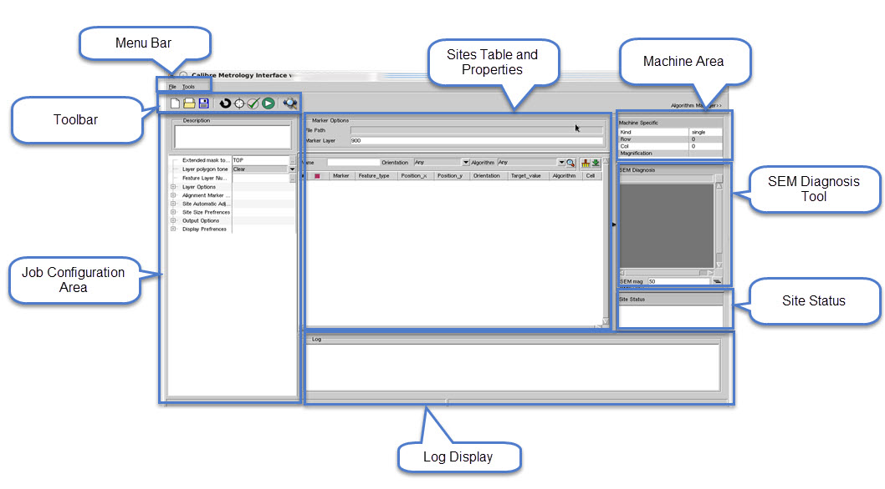

The basic workflow
for the Calibre Metrology Interface uses CMi in conjunction with
Calibre WORKbench (or Calibre MDPview) to graphically enter sites
and generate a target list in different metrology machine formats.
Prerequisites
This
workflow presumes that a number of steps have been followed.
Invoke
Calibre WORKbench with the -mapi command line option, in addition
to any command line arguments you might also require.
<calibre_home>/bin/calibrewb -mapi
See
the Calibre WORKbench User’s and Reference Manual for complete information
on command line arguments.
In
Calibre WORKbench, select Tools > Calibre Metrology Interface to
invoke CMi.
Figure 1. Calibre Metrology
Interface
The
mask layout should be loaded into Calibre WORKbench (or Calibre
MDPview).
Procedure
- In the Calibre Metrology Interface
window, perform one of the following:
Select File > New Session to
start a new CMi session. See “Saving and Reloading Sessions” for information on CMi sessions.
Select File > Open Session to
import a previously-saved CMi session file.
Select File > Load Jobspec to
load a previously-saved jobspec file (XML or Tcl). See “Loading and Saving Jobspec Files” for further information.
- Add
markers to your layout in Calibre WORKbench. If you already have
markers from a previous CMi session, you can skip this step. There
are different methods available to add markers to your layer.
Import Markers —
Select File > Import Markers to
import markers from a marker layer, CSV file, super spreadsheet,
gauge, or RDB file. The markers are drawn in the layout from text
files and populate the Sites table (see “Sites Table and Properties”). If the source of the marker
is a marker layer, the layout is scanned to get existing markers
to populate the table.
You can optionally click Scan Markers Algorithm and Type to
scan all markers in the layout to check the feature type (either
width or space) and the algorithms assigned to the markers in this
job.
Draw Markers on the Layout —
You can add markers directly to the layout loaded into Calibre WORKbench
on the marker layer. It is recommended that you enable the Select
tool in the toolbar of the Layout view before using the New Marker
or Edit Marker tools. Otherwise, some unintended operations may
occur.
In
Calibre WORKbench or Calibre MDPview, place the cursor at a measurement center
point, then press Ctrl and double-left-click to invoke the New Marker dialog.
In
the New Marker dialog
box, enter a Marker Name, and adjust the values for Center X, Center
Y, Orientation, Window Width, Size, and Algorithm.
Click OK.
Marker information can be viewed in the Sites table (see “Sites Table and Properties”).
To edit an existing Marker,
select the marker entry in the Sites table and click on any of the
columns to edit values. Marker operations are covered in more detail
in “Marker Operations”.
- In the Job Configuration Area,
specify the job parameters (including layout, measurement, and output
options). You must minimally specify parameters for the Extended
mask topcell and Feature Layer Number.
- You can optionally add a chip
to the job deck for assembly by performing the following:.
- Select Tools > Assemble Jobdeck.
- In the Assemble Jobdeck dialog
box, enter chip parameters such as the Chip File Name, Chip Topcell,
Mask Chip Cell Name, as well as fracture parameters.
- Click OK. The chip is added to the
mask layout.
Further
description of the assembly process are described in “Chip Assembly”.
- Click Generate Output to generate
all output files. This generates all output files (and is required
after all marker entry and algorithm edits).
Error, Warning, and Info messages
appear in the log window and the command window (the terminal where
Calibre WORKbench was invoked). Some messages also appear in the
status line at the bottom of the Calibre Metrology Interface GUI.
More severe errors appear as popup windows. The command window should
be monitored for correct operation. Refer to “Calibre Metrology Interface (CMi) Error Messages” for a complete listing of possible
messages.
The results are put into a
directory specified by the user’s choice of Output String:
Any previous results for that
directory are moved to a date-coded backup directory:
You can use Generate Output as
an optional point-by-point for review (extra results can be discarded).
This operation
validates sites against the layout geometries and reduces user effort
for precise locations. You can activate or deactivate this function
in the CMi GUI.
Confirms exactly 2 parallel
edges in the marker (for Touching Edge method of validation).
Adjusts the center coordinate.
Extracts the layout feature
width.
Draws the result on the
Measurement layer for success, or on the Failed Markers layer.
Users can Generate Output repeatedly,
after drawing each marker.
- Transfer
the files to SEM.
- Save the CMi session by selecting File > Save Session or Save Session As. The CMi session
is saved as a directory. The job parameters file (jobspec) is saved
as an XML file.